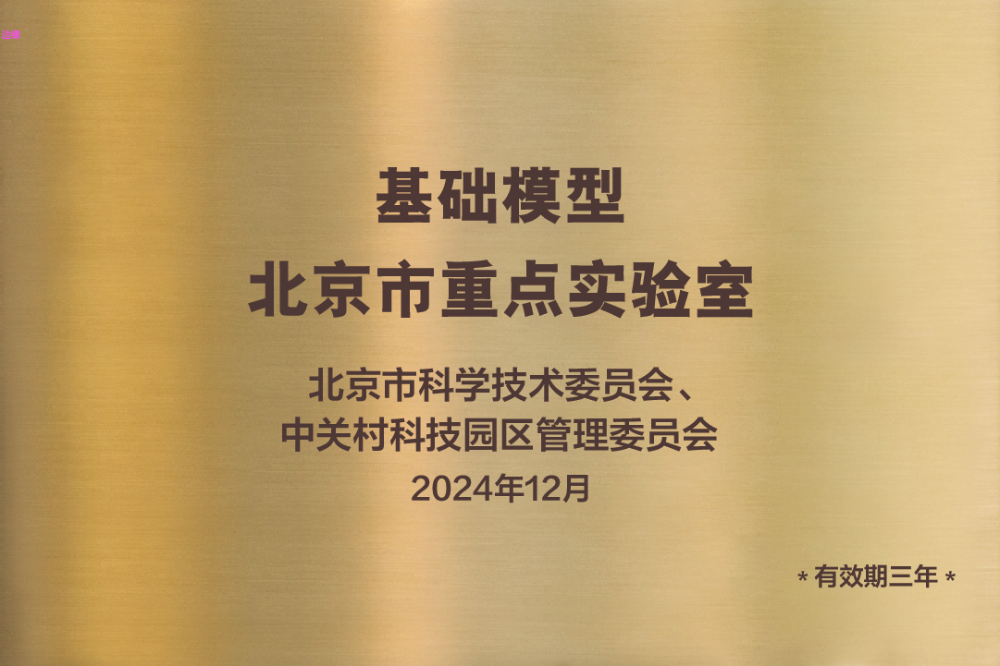
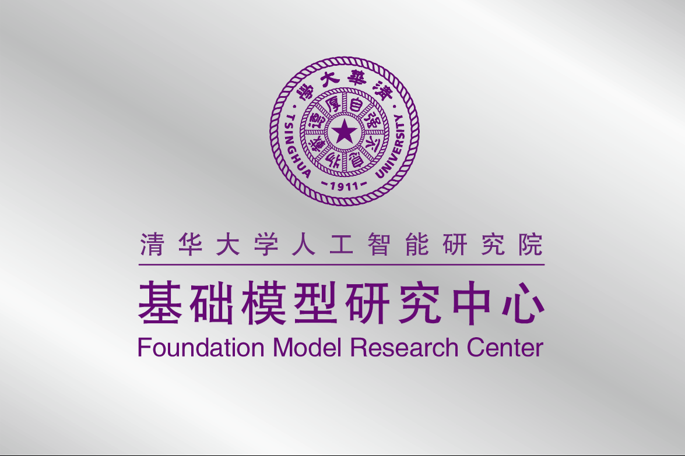

Bridging Knowledge and Intelligence for a Better Future.
Founded in 1996, KEG has evolved from a research unit into a global hub for AI innovation. Here are some key moments in our journey.
The Knowledge Engineering Group was founded within the Department of Computer Science and Technology at Tsinghua University.
Released AMiner.org, an AI-driven academic search and mining platform, now connecting millions of researchers worldwide.
Initiated a comprehensive strategic effort in large language models and foundation-model platforms, with innovations in pre-training methodologies as well as training and inference acceleration.
Successfully transferred ChatGLM technology to Zhipu AI (spin-off), accelerating the industrial application of Large Language Models.
Consolidated its research efforts around code-centric foundation models and agentic systems, advancing the integration of large language models with program synthesis, tool use, and long-horizon reasoning.
We focus on fundamental, hard problems rather than low-hanging fruit. We believe in persistent effort over decades to achieve breakthroughs in AGI.
We are committed to Open Source. From AMiner to ChatGLM, we share our models and datasets to democratize AI and foster global collaboration.
We pursue "Ding Tian Li Di" (顶天立地): aiming for world-class theoretical contributions while building robust, large-scale systems that work in the real world.
The Knowledge Engineering Group (KEG) at the Department of Computer Science and Technology, Tsinghua University, was founded in 1996 by Prof. Kehong Wang. The group is currently led by five faculty members: Juanzi Li, Bin Xu, Jie Tang, Yuxiao Dong, and Lei Hou. KEG focuses on foundational research in artificial intelligence driven by the dual engines of data and knowledge. Its research spans a broad range of areas including artificial intelligence, large-scale foundation models, knowledge graphs, data mining, and social network analysis.
Over the years, KEG has undertaken numerous national-level research projects, international collaborative programs, and industry partnerships. These include projects funded by the National Natural Science Foundation of China, the National Key R&D Program, the 863 Program, EU framework programs, and the China–UK Newton Advanced Fellowship, as well as collaborations with major organizations and enterprises such as Xinhua News Agency, Tencent, Huawei, Alibaba, Meituan, and OPPO. To date, KEG has trained over 100 graduate students and more than 20 postdoctoral researchers. Many alumni have received honors such as Outstanding Doctoral and Master’s Theses Awards, Outstanding Graduates of Tsinghua University, and Beijing Outstanding Graduate Awards, reflecting the group’s strong record in talent cultivation.
Since 2019, KEG has actively aligned its research agenda with global trends in artificial intelligence, with a particular emphasis on large language models (LLMs) and foundation model platforms. The group has made key innovations in pre-training methodologies, training and inference acceleration, and system-level optimization, earning broad recognition from the international research community. Notably, KEG has established a fully independent, end-to-end foundation model technology stack with complete intellectual property rights. This effort has contributed to early deployments of large-model computing platforms at national supercomputing centers and domestic hardware vendors, helping to mitigate critical dependencies in large-scale AI infrastructure. The ChatGLM series of models developed by KEG has achieved state-of-the-art performance comparable to GPT-4, with techniques cited and positively evaluated by multiple Turing Award laureates. The open-source ChatGLM models have accumulated over 140,000 stars on GitHub and more than 20 million downloads on Hugging Face, ranking as one of the top five most popular open-source organizations globally on Hugging Face, and the only research institution from China on the list.
KEG’s research has been recognized with numerous prestigious awards, including the Second Prize of the National Science and Technology Progress Award (2020), the First Prize of the Beijing Invention Patent Award (2020), the First Prize of the Chinese Institute of Electronics Science and Technology Progress Award (2023), and the Wang Xuan Outstanding Young Scholar Award (2020). Internationally, KEG received the ACM SIGKDD Test-of-Time Award (2020)—the first such award granted to a team from mainland China—and the IEEE ICDM Research Contribution Award (2023). Several of KEG’s research outcomes have been successfully transferred to industry, leading to the establishment of Zhipu AI (Beijing Zhipu Huazhang Technology Co., Ltd.), which has achieved a valuation exceeding 20 billion RMB, demonstrating KEG’s strong and sustained impact on both academia and industry.

The Beijing Key Laboratory of Foundation Models was officially approved for construction in 2025. Academician Zhang Bo serves as the Chair of the Academic Committee, and Prof. Jie Tang serves as the Director.
Research Areas:

The Foundation Model Research Center of the Institute for Artificial Intelligence, Tsinghua University, was established on June 30, 2023. The center aims to unite resources across government, academia, and industry, bringing together expertise from multiple departments and institutes at Tsinghua University. The center provides an open platform for researchers, industry experts, and students interested in foundation models to exchange ideas and explore frontier technologies. Through seminars, forums, and workshops, it continuously promotes innovation and practical applications of foundation models. Positioned as a coordinating hub and outward-facing platform, the center collaborates closely with the Department of Computer Science and Technology, the Department of Electronic Engineering, the Institute for Industry-Oriented AI, the School of Public Administration, and other related units to advance interdisciplinary research and large-model talent cultivation.
The center actively serves national strategic needs, contributing to the advancement of foundation model research, the enhancement of research excellence, and the translation of scientific research outcomes into societal impact. It aims to become an internationally influential research institution with distinctive academic strengths, supporting technological self-reliance, high-level talent development, and the high-quality growth of artificial intelligence in China.
We invite researchers, students, and innovators to collaborate with us on the exciting area of artificial general intelligence.